Vanderbilt · Learning Series · ATD facilitator guide · print edition
People Data, Safely, the facilitator guide

Run of show
| Screen | Full (min) | Core (min) |
|---|---|---|
| Welcome / QR | 3 | 2 |
| Objectives | 2 | 1 |
| The Chancellor's charge | 3 | <1 |
| Agenda | 1 | skip |
| 01 · The new expectation | 9 | 6 |
| Manifesto | 1 | skip |
| 02 · The Aggregate Rule | 12 | 9 |
| 03 · Themes from the noise | 11 | 8 |
| 04 · Feedback, rehearsed | 11 | 7 |
| 05 · The Review Prep Lab | 14 | 10 |
| 06 · From data to conversation | 10 | 6 |
| Recap quiz | 4 | 4 |
| Capstone · My people-data card | 6 | 6 |
| Glossary | 1 | skip |
| Closing · commitment | 5 | 1 |
| Total | 93 | 60 |
Audience
Managers and team leads in the Manager Voyage program: anyone who receives engagement results, runs 1:1s, or writes reviews and is deciding what AI may and may not do with any of it. 8 to 24 works best (the trap-invention and mystery-swap drills run in pairs); scales larger with room votes. Coaching for Performance is the natural companion (it teaches the conversation method; this course teaches the data side), and the traffic light from the AI courses is assumed and restated here as the Aggregate Rule.
Room setup
Projector plus presenter device; learners on their own devices via the Welcome-slide QR; movable seating for pairs. A whiteboard helps: you will draw the traffic light and keep the phrase PATTERNS AND ROLES, NEVER NAMES visible all session. Virtual: breakouts of 2 for the trap-invention and mystery swaps. Set the norm in the first minute: patterns and roles, never people's names, and nothing typed is saved or sent.
Materials
- Projector or large display and the facilitator link open (this edition)
- Facilitator laptop with arrow keys or clicker; all notifications off
- Learner devices (BYOD) joining via the welcome-slide QR
- A few printed cheat sheets (cheatsheet.html) for anyone without a device
- Printed people-data cards (worksheet.html) as the no-device and projector-failure fallback
- Whiteboard or flip chart with markers for the traffic light and the share-back rewrites
- The current approved VU tool list (ChatGPT EDU, Amplify, Copilot) confirmed with IT the week before
A week before
- Read this guide end to end, then run BOTH editions start to finish, doing every exercise, including building an interrogation plan for a real signal from your own team. You will be asked what your own data has been waiting for; a real answer plays far better than a hypothetical.
- Build your own people-data card in the capstone for a source you genuinely own. You'll show the structure, never the contents.
- Send the pre-work invite (template on this page) with the calendar invite: bring one people-data source that has been sitting unworked, held privately.
- Decide your path now: Full (90-minute slot) or Core (60). Mark which pair drills you keep versus run solo.
- Confirm the approved VU tool list with IT and skim the Gallup workplace research so the numbers in Guess the Number are fresh; the game's reveals carry the citations, but you should be able to say 'the research' with a straight face.
The day before
- Test the projector with the facilitator link; confirm the notes rail is readable from where you'll stand.
- Scan the welcome QR from the back of the room with your own phone; it must land on the learner edition.
- Run one full round of the Review Prep Lab and one trainer so you can drive them without looking.
- Print 5 to 10 cheat sheets and people-data cards.
- Re-read the tough-questions bank; say the 'is my data anonymous?' response out loud once. That question is coming.
30 minutes before
- Welcome slide up as people arrive; it does the enrolling for you.
- Close every other tab and app; silence the machine.
- Test arrow-key navigation and one interaction (run a Guess the Number round, open the lab).
- Write 'PATTERNS AND ROLES, NEVER NAMES' where the room can see it all session.
- Draw the empty traffic light (three rows: green, yellow, red) on the whiteboard; you'll fill it live in section 02.
When things go sideways
If Projector or the site fails mid-session: Teach from the whiteboard: the traffic light, the Coach's Loop (aggregate, interrogate, humanize, converse), and the rehearsal pattern all draw in seconds. The trainers become read-aloud room votes, the builder and capstone move to the printed card, and the lab becomes a group walk-through: read each stage's three options aloud and have the room vote.
If Learner devices can't join (wifi or filters): Run facilitator-only: the trainers play well on the projector with the room voting A/B/C by hands; the private builder and capstone move to paper. You lose typing, not learning.
If You're 10+ minutes behind by the Review Prep Lab (05): Declare the Core path silently: pair drills become solo passes, debriefs shrink to one voice, and the closing tightens to the fist-to-five plus commitment round. Never cut the lab, the builder, or the capstone; they carry the session's practice objectives.
If Someone names a colleague or starts reading a real survey comment aloud: Protect the norm warmly and immediately: 'Hold that. Patterns and roles, never names, and real comments stay off the air; they can identify their authors.' If it keeps happening, a real conflict is usually underneath; offer a private follow-up and point them at Coaching for Performance for the conversation itself.
If Someone announces they already run 1:1 notes or survey comments through a personal AI account: Thank them for the honesty, because half the room is quietly doing something similar, then draw the line without shaming: named people in personal tools is the exact red case, and today gives them the compliant version that gets them the same value (de-identified pattern lists, approved tools). Follow up privately if it sounded like an active habit involving identifiable people.
If The room is skeptical: 'AI has no place near people decisions, full stop': Agree with the core of it, then sharpen: the course bans AI from exactly the places they're worried about (verdicts, named people, individual records) and uses it only where a fast reader helps (aggregated patterns, rehearsal). The Judge the Draft trainer usually converts this room: they can hear the difference between rehearsal and outsourced judgment.
If The room is the opposite: enthusiasts who want AI to draft the actual reviews: Aim the enthusiasm at the lab: let them pick the AI-writes-everything option and read the grievance outcome aloud. The weak tier does the sobering for you. Then hand them the strong version: AI on structure and recall is faster anyway, and it survives an HR appeal.
If A real, live privacy incident surfaces ('I think this already happened on my team'): Stop and honor it; this outranks the agenda. Restate the Aggregate Rule, confirm the case against it without collecting details in the room, and route it: this goes to HR or the privacy office today, not to a workshop. Offer to stay after and help them frame the report.
Tough questions, ready answers
Q: Is my survey data actually anonymous? Can managers see who said what?
Answer for your context honestly: at Vanderbilt, engagement platforms report at aggregate levels with minimum group sizes precisely so individuals cannot be identified, and this course adds the manager-side duty: never try to reverse it. The moment a manager speculates about authorship, even warmly, anonymity is dead retroactively and every future survey collects fiction. If someone needs the exact reporting thresholds for a specific platform, take it offline and get the real answer from HR rather than guessing from the front of the room.
Q: Culture Amp's AI Coach is built into the tool and reads individual comments. If the vendor does it, why can't I?
Because the vendor's AI runs inside a contracted, access-controlled platform that the institution vetted, with the survey's anonymity model intact. The rule this course teaches governs what YOU paste into tools: taking people data out of its governed home and putting it into an AI tool is a different act from the platform processing data inside its own walls. Use the built-in features of approved platforms freely; the Aggregate Rule is about what leaves them.
Q: My 1:1 notes are mine. Why is it red to ask AI about my own notes?
The notes are yours; the information in them is about someone else, and that is what the red light protects. 'My notes about Jordan' is a person's performance record wearing your handwriting. The compliant version costs you five minutes: build a de-identified pattern list, roles and recurring topics, no names, no identifying events, and that list is yellow in an approved tool. You keep the value of theme-spotting; Jordan keeps the dignity of not being in a prompt.
Q: If AI can't write the verdict, what is it actually saving me? This sounds like the same work plus extra steps.
The hours in people work were never in the judging; they were in the reading, recalling, structuring, and dreading. AI collapses those: a hundred comments become themes in a minute, a year of de-identified notes becomes a structured evidence file, and the conversation you dreaded gets rehearsed before you have it once. The judgment was always minutes of work resting on hours of preparation. You keep the minutes; the machine eats the hours.
Q: What if the AI's theme is wrong and I act on it?
That is exactly what the ground truth test exists to catch: no theme gets acted on until you can name a concrete example you have seen yourself, and a theme without one goes to the team as a question, which is safe even when the theme is wrong, because asking a genuine question never damaged a team. The failure mode to fear is the confident wrong theme announced as fact, and the test blocks precisely that. Data proposes; the manager disposes.
Q: Small teams are my whole life; everything I manage is under ten people. Is this course useless for me?
The rule bites hardest for you, and the techniques still work. Under five respondents, skip the aggregate interrogation of scores and use what you legitimately have: your own de-identified pattern list across time rather than across people, published benchmarks as green context, and the rehearsal pattern, which needs no team data at all. Small-team managers actually get the most from sections 04 and 06; the conversation techniques scale down perfectly even where the statistics do not.
Q: Doesn't HR or my HCM system already forbid all of this? Why is a course drawing these lines?
Policy sets the floor and moves slower than the tools; this course trains the judgment for the cases policy has not enumerated yet. Where Vanderbilt policy or your platform's rules are stricter than today's material, they win, always. What the course adds is the manager-level instinct: the head count before the paste, the ground truth test before the announcement, the roles-not-names habit at the keyboard. Those keep you safe in the gap between what tools make possible and what policy has caught up to.
Copy-paste templates
Pre-work invite (paste into the calendar invite)
Subject: Before our People Data, Safely session. One thing to bring: one people-data source that has been sitting unworked, your last engagement results, a retro board, a pulse, or your own 1:1 notes. You will never be asked to share it or to name anyone; every exercise runs on patterns and roles, and everything you type stays on your screen. Come knowing roughly what that data has been waiting for. That's it, no reading, no tools to install.
7-day pulse (send one week after)
Subject: One week later, did the session happen? Three quick lines, reply whenever: 1) Did you run the 45-minute theme-to-conversation session from your card? 2) Which theme survived the ground truth test? 3) Which conversation is on the calendar because of it? Replies come to me only, and I never need the contents of your data. Not yet? The card still works; this note is your nudge.
30-day re-poll (send a month after)
Subject: Thirty days of people data, worked. Two questions, same scale as the room: 1) Fist to five, how confident are you now reading your team's data with AI inside the lines? 2) Which conversations happened because of the data, and what did they change? Reply with a number and a line. The before-and-after pair is how we know this session did more than feel good.
After the session
Seven days out, send the pulse: 'Did the theme-to-conversation session happen? Which theme survived the ground truth test? Which conversation is on the calendar?' At 30 days, send the re-poll: the same fist-to-five confidence question from the close, plus 'which conversations happened, and what did they change?' The count of theme-to-conversation sessions actually held is the program's headline Level 3 metric.
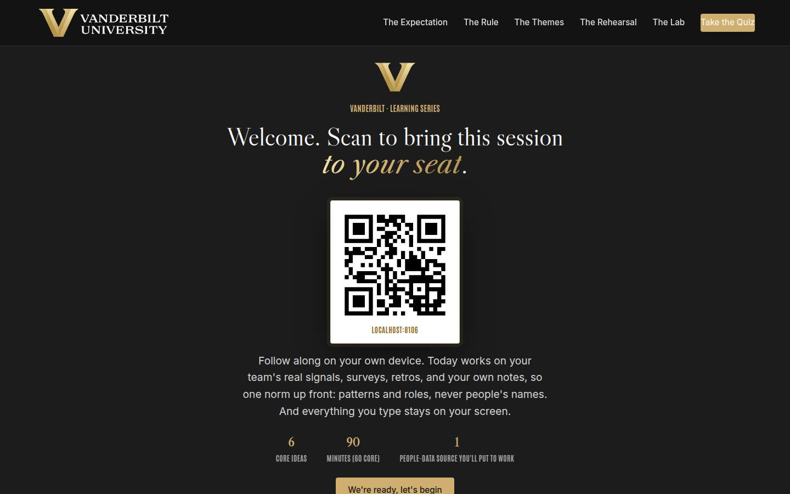
Welcome / QR Full 3 min · Core 2
Get every learner into the experience on their own device and set the norm that makes real people-data material safe: patterns and roles, never names, and nothing typed leaves the screen.
Say
“Welcome. Point your camera at that code before we start. Today is about the newest part of the manager job: the dashboards, survey results, and AI coaches that keep arriving, and how to use them without ever putting a person where a person must not go. We'll work close to your team's real data, so one ground rule for the next ninety minutes: patterns and roles, never people's names. And everything you type today stays on your screen; nothing is saved or sent anywhere.”
Do
- Have this slide projected as people arrive.
- Point at the QR and get phones up before you say anything else.
- Set the norm explicitly and early: patterns and roles, never people's names; typed exercises stay on their screens.
- Confirm by show of hands that most of the room has the site open before advancing.
Ask
“Quick calibration, shout it out: how many of you got engagement survey results in the last year? And how many of your teams saw something visibly change because of them?”
Expect:
- Nearly every hand up on the first question
- Most hands down on the second
- Some knowing laughter at the gap
Respond: Name the gap warmly: 'That gap in this room is the same gap in the global data, and closing it is a coaching skill, which is why you're here and the dashboards aren't.'
Validate: 80%+ of the room has the deck open on a device; the room can repeat the 'patterns and roles, never names' norm back to you.
Watch for: Anyone bracing for either an AI sales pitch or a compliance lecture. The frame that relaxes both: today is a coaching course that happens to involve data, and the privacy rules make the useful parts safe rather than forbidden.
Transition: “Here's exactly what you'll walk out able to do.”
Core path: Core: one scan prompt, the norm stated once, move on.
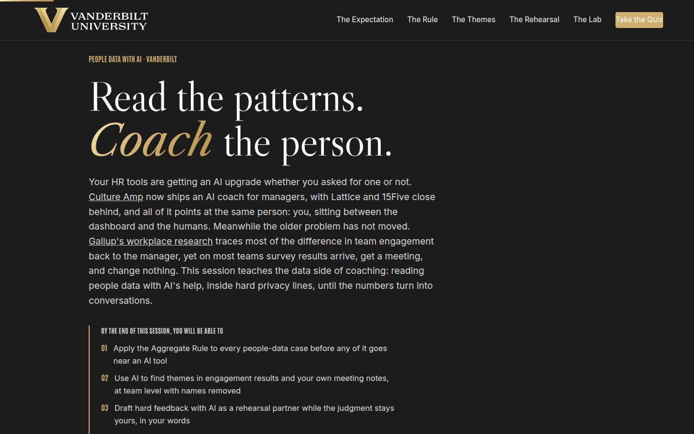
Objectives Full 2 min · Core 1
Set the contract: five capabilities, ending in one real people-data source carded for work with a dated first move.
Say
“Five things by the end. You'll be able to run every people-data case through the Aggregate Rule before it goes near a tool. You'll use AI to pull themes out of engagement results and your own notes, at team level, names out. You'll rehearse hard feedback with AI without ever letting it write the judgment. You'll prep a review cycle where the machine does structure and you do every verdict. And you'll run the conversation the data was collected for, which is the whole point. It all lands in one artifact: a people-data card for a source you actually have, with a date on it.”
Do
- Read the five objectives briskly, in plain language.
- Land on the last one: this session ends with a REAL card, one data source, one first move, one date.
- Name the sources once for credibility: Gallup's workplace research for the numbers, the Aggregate Rule and the Coach's Loop as the method.
Validate: Learners can say what the capstone will be (one source, one first move, one date).
Watch for: Tool questions arriving early ('is Copilot approved? what about the survey vendor's AI?'). Park them: section 02 answers the approved-tools question, and the pattern outlives any tool list.
Transition: “Before the plan, one minute on why the university wants exactly this from you.”
Core path: Core: objectives 1 and 5 out loud; the rest on screen.
The Chancellor's charge Full 3 min · Core <1
Anchor the session in the institution's own plan: the one-sentence vision, the three focus areas in people terms, and where a manager who reads patterns and coaches people feeds the reputation flywheel.
Say
“Chancellor Diermeier's vision for this university is one sentence with no hedge in it: Vanderbilt will define the great university of the 21st Century and be it. The motto has always been the dare, Crescere aude, dare to grow, and people grow under managers who act on what their teams tell them. The talent this vision needs is mostly already here, sitting on your teams, and whether it stays tracks the manager more than anything else. The bottom card is the reputation flywheel: reputation attracts talent, funding, partnerships, and access, and values-driven leadership shows in how you handle what your people tell you. Inside the privacy lines, that is exactly what today teaches.”
Do
- Read the vision sentence exactly as written, then pause; it lands better without commentary.
- Walk the three focus cards in one breath each, landing each team translation line.
- Close on the flywheel card: the flywheel attracts talent, and the coaching this course teaches is how the talent already here stays.
Validate: Learners can connect one focus area to their own team's engagement data, in one sentence.
Watch for: Strategy fatigue: part of the room has heard the vision language elsewhere. Keep it in people terms; the translation lines exist so nobody has to squint to find themselves in it.
Transition: “Six ideas, in a deliberate order.”
Core path: Core: under a minute: read the vision sentence, gesture at the three focuses, move on.
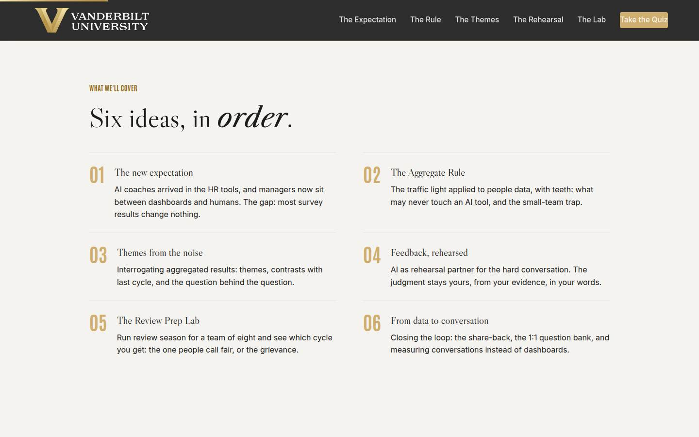
Agenda Full 1 min · Core skip
Show the arc once so learners can place each tool as it arrives: expectation, rule, themes, rehearsal, lab, conversation.
Say
“The arc is simple: first why this landed on your desk, then the rule that makes everything else safe, the Aggregate Rule. Then the two techniques: interrogating aggregated data and rehearsing feedback. Then you'll run a full review season in the lab, and we finish where the data was always pointing: the conversation.”
Do
- Walk the six items in one breath each.
- Point out the shape: the squeeze (01), the rule that makes everything safe (02), the techniques (03 and 04), the practice rep (05), and the payoff (06).
Validate: None needed; this is orientation.
Watch for: Don't teach here; every concept has its own slide.
Transition: “Start with why the HR tools suddenly have opinions.”
Core path: Core: skip entirely; the deck's structure carries it.
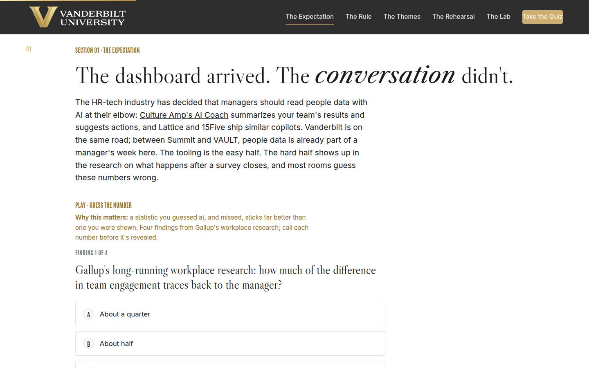
01 · The new expectation Full 9 min · Core 6
Establish with guessed-at, missed numbers that engagement runs through the manager, that AI use is outrunning guidance, and that survey results changing nothing is the real gap this course closes.
Say
“Before any method, the evidence, and I want you to guess. Gallup has measured workplaces for decades, and one finding towers over the rest: about seventy percent of the difference in team engagement traces to one variable, the manager. Not the perks, not the survey, the manager. Meanwhile AI use at work has roughly tripled in white-collar roles in two years while guidance crawls behind it, and your HR tools now ship AI coaches that assume you'll use them. Four findings, call your number before each reveal.”
Do
- Frame the game: four findings from Gallup's workplace research, guess each number before it's revealed. Missed guesses are the point; they stick.
- Run Guess the Number on devices, or as a room vote on the projector; call for guesses out loud before each reveal.
- After the reveal round, land the squeeze: the tools assume an AI-assisted manager, the engagement lever IS the manager, and the guidance hasn't caught up. That's why the rule comes before any technique.
- Run the quick check (what happens after a survey closes), then the pair activity: when did your team last get results, and what visibly changed?
- Count the held-versus-filed hands out loud and connect the count to the Gallup engagement numbers.
Ask
“When your team last got survey or retro results, what changed afterward that the team could actually see, and be honest: held or filed?”
Expect:
- Mostly filed: a meeting happened, then nothing visible
- One or two real examples of a change the team could point at
- Someone admits they never opened the results at all
Respond: For the never-opened answer, warmly: 'That honesty is worth more than a dashboard; your card today gives that data its first real appointment.' For the filed majority: 'Filed is the default everywhere. The rest of today is the un-filing method.'
Debrief: Engagement runs through you, the data alone has never moved it, and the tools arrived before the rules. So the first thing this course installs is the rule.
Validate: Quick check correct; the held-versus-filed count lands visibly and the room sees its own data-to-nothing gap.
Watch for: A methodology skeptic litigating Gallup's survey design. Don't defend a single number; the case is the convergence: the manager effect, flat engagement, and AI adoption outrunning guidance all point the same way. Park deep methodology questions.
Transition: “One sentence before the method, and it's the whole course in eleven words.”
Core path: Core: Guess the Number as a fast room vote, quick check stays, the pair inventory becomes one show of hands with no discussion.
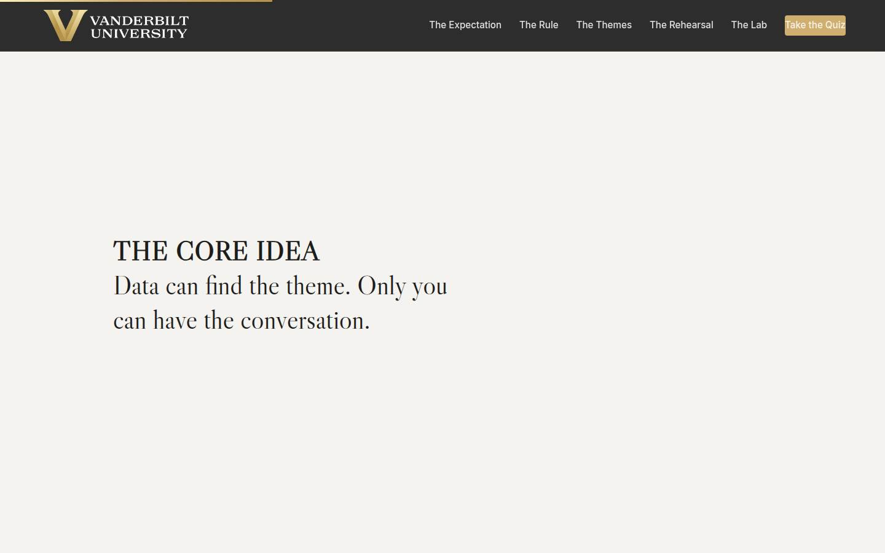
Manifesto Full 1 min · Core skip
One beat of stillness to lock the session's core idea before the method arrives.
Say
“Data can find the theme. Only you can have the conversation.”
Do
- Let the line animate word by word. Say nothing until it finishes.
- Read it once, slowly, then advance.
Validate: None; this is pacing.
Watch for: The urge to talk over it. Don't.
Transition: “And before AI touches any of it, one rule decides what it may see.”
Core path: Core: skip; say the line yourself as you pass it.
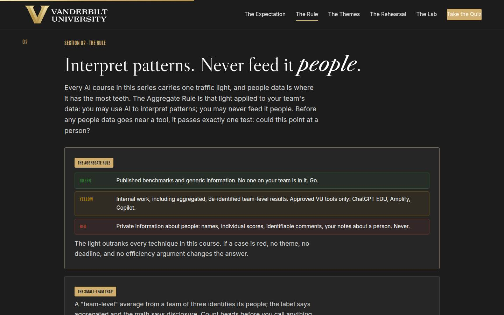
02 · The Aggregate Rule Full 12 min · Core 9
Install the Aggregate Rule as the traffic light applied to people data, with the small-n trap and the 1:1-notes case as the two traps every manager must be able to spot cold.
Say
“Here is the rule that makes everything else in this course safe, and it's the same traffic light from the AI courses, aimed at people data. Green: published benchmarks and generic information, nobody on your team is in it, go. Yellow: internal work, and that includes your team's aggregated, de-identified results, in approved VU tools only: ChatGPT EDU, Amplify, Copilot. Red: private information about people. Names, individual scores, comments that could identify someone, your notes about a person. Never, in any tool, for any reason. One test sorts every case: could this point at a person? And two traps to burn in now. A team-level average from three people is those three people wearing a trench coat; under five respondents, treat it as red. And your 1:1 notes about Jordan are red however much they feel like your notes; the de-identified pattern list you build FROM them, roles and topics, no names, that list is yellow.”
Do
- Fill the whiteboard traffic light as you walk the rule: published benchmarks green, aggregated de-identified team data yellow in approved VU tools only, anything that could point at a person red.
- Say the one test out loud twice: could this point at a person?
- Land the small-team trap with the trench coat line; it sticks. Under five respondents, aggregated is a label, not a protection.
- Land the notes case: your notes about a named person are red; your own de-identified pattern list is yellow. That pair is the most-used distinction in the course.
- Send them to Red, Yellow, or Green: five cases on devices.
- Run the trap-invention pair drill from Go deeper and surface the two best traps to the room.
Ask
“From the trap drill: what was the sneakiest looks-yellow-but-red case your pair invented, and what's the tell?”
Expect:
- Small groups hiding inside big exports: 'the marketing slice is two people'
- Identifying roles: 'the only remote engineer said...'
- Time-based identification: 'comments from whoever joined in March'
Respond: Name the pattern in the traps: 'Notice every trap works the same way: the label says group, the details say person. That's why the test is could this point at a person, never does this look aggregated. When a case survives the test and still feels wrong, ask HR before any tool sees it.'
Debrief: One light, one test, two traps. Everything AI does for you from here on happens inside the lines you can now draw cold.
Validate: 4+ of 5 on the trainer for most of the room; the room can state the rule unprompted and explain why a team of three is red. This rule feeds sections 03, 04, 05, and the capstone.
Watch for: Two drifts: relief-driven overreach ('so team data is fine!' without the approved-tool and head-count conditions) and quiet confessions of current red-light habits. Correct the first immediately; handle the second warmly but privately (the contingency has the script). The rule correction matters more than the flow of the room.
Transition: “So let's go earn something with it: your data is safe at team level, and now AI gets to be genuinely useful.”
Core path: Core: rule and both traps at full strength, trainer on devices; the trap-invention drill becomes a solo pass: sort your own most recent people-data artifact.
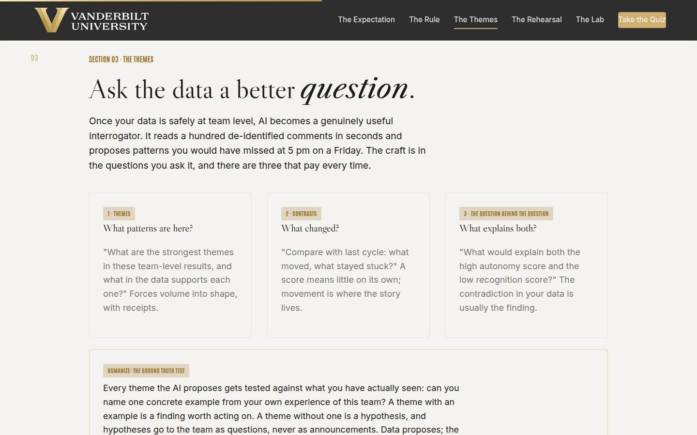
03 · Themes from the noise Full 11 min · Core 8
Teach the three-question interrogation of aggregated data (themes with support, contrasts, the question behind the question) plus the ground truth test, and get every learner a private interrogation plan for their own real signal.
Say
“Your data is at team level, names out, in an approved tool. Now AI earns its keep, because reading a hundred de-identified comments is exactly what it's fast at, and there are three questions that pay every time. One: what are the strongest themes, and quote the data that supports each one. The quoting matters; an AI asked only for themes will find some in pure noise. Two: what changed since last cycle, what stayed stuck? Movement is where the story is. Three, the question behind the question: what would explain both this and that? The contradiction in your data, high autonomy and low recognition, better workload and worse morale, is usually the finding. Then the step that keeps you the manager: the ground truth test. Every theme has to match one example you have actually seen. With an example, it's a finding. Without one, it's a hypothesis, and hypotheses go to your team as questions, never announcements.”
Do
- Walk the three question cards IN ORDER and read each example question aloud; the phrasing is the technique.
- Stress the receipts habit: always ask the AI to quote the data supporting each theme; unsupported themes get dropped.
- Land the ground truth test hard: a theme you cannot match to one seen example is a hypothesis, and hypotheses go to the team as questions.
- Then the section's real work: the private builder. Three fields: the signal, the suspicion, the mystery. Repeat the privacy line before they type.
- Give the builder quiet time; field 3, the part you cannot explain, deserves a full minute.
- Run the mystery swap from Go deeper: pairs trade mysteries, propose explanations, pick the testable one.
Ask
“From the swap: whose partner proposed an explanation for their mystery that they had genuinely never considered?”
Expect:
- Several hands; second perspectives reliably crack mysteries
- Someone found their suspicion didn't survive their partner's questions
- A pair discovered their mysteries were the same pattern from different teams
Respond: Land the method point: 'A colleague did for you what the AI does with the data: proposed patterns you couldn't see from inside. And notice what you did next, automatically: you tested it against what you know. That test is the humanize step, and it's yours alone.'
Debrief: Three questions, receipts required, ground truth test at the end. You now have an interrogation plan for a real signal, and the capstone will put a date on it.
Validate: 3+ of 4 on the earlier trainer patterns holding; every learner has a built interrogation plan with a real signal and a real mystery. This plan feeds the capstone and the 7-day pulse.
Watch for: Learners whose 'signal' is actually a person ('my analyst seems disengaged'). Redirect to team-level signals: scores, retro patterns, participation trends. Also the manager who wants AI to explain the data instead of interrogating it; the difference is who holds the hypothesis.
Transition: “That's the team's data handled. Now the harder case: the conversation with one person.”
Core path: Core: cards fast, ground truth test verbatim, builder stays at full length with its quiet minute protected; the mystery swap drops to an optional 90 seconds.
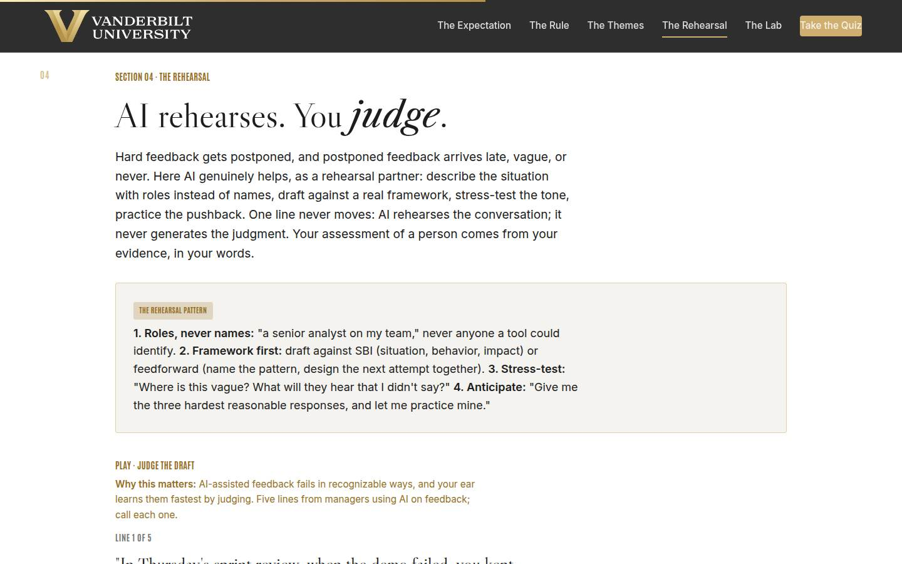
04 · Feedback, rehearsed Full 11 min · Core 7
Install AI as a rehearsal partner for hard feedback (roles not names, framework first, stress-test, anticipate) with the verdict line as the boundary that never moves: your assessment, your evidence, your words.
Say
“Now the conversation with one person, because that's where feedback actually lives and where it most often dies of postponement. AI is a genuinely good rehearsal partner here, if you hold the pattern. Roles, never names: 'a senior analyst on my team,' and nothing that could identify them. Framework first: SBI, situation, behavior, impact, or feedforward, name the pattern and design the next attempt together. Then use the machine for what it's good at: stress-test the draft, where is it vague, what could be heard as blame? And anticipate: give me the three hardest reasonable responses and let me practice mine. One line never moves, and I'll say it twice today. AI rehearses the conversation; it never generates the judgment. Your assessment of a person comes from your evidence, in your words. The moment a manager says 'the AI flagged you,' that manager has resigned from the job while keeping the title.”
Do
- Land the emotional truth first: hard feedback gets postponed, and postponed feedback punishes everyone. Rehearsal is what makes it deliverable.
- Walk the rehearsal pattern card: roles never names, framework first (SBI or feedforward), stress-test, anticipate.
- Draw the verdict line in the air: AI rehearses the conversation; it never generates the judgment. Say it twice.
- Send them to Judge the Draft: five lines on devices.
- Run the quick check, then the group drill: one shared scenario, everyone drafts one SBI line, volunteers read, the room calls each one.
- Cross-reference Coaching for Performance once: GROW and feedforward run the conversation; today is the keyboard work before it.
Ask
“From the drill: what made the strongest line in the room strong?”
Expect:
- A real, dated situation you could picture
- Impact stated plainly without blame language
- A next move the person owns
Respond: Tie it to the division of labor: 'Everything you just praised came from a human who was there. Notice nothing on that list is wording; wording is the part AI can help polish. Evidence and judgment first, rehearsal second, and it delivers on time instead of never.'
Debrief: Roles not names, framework first, and the verdict stays home. The feedback you've been postponing now has a rehearsal method waiting for it.
Validate: 4+ of 5 on the trainer; drafted lines in the drill name a situation, a behavior, and an impact; the room can say the verdict line unprompted.
Watch for: The learner who wants AI to 'check whether I'm being fair to this person.' That is the verdict in disguise, and it usually requires feeding the person in. Redirect: fairness checks are what calibration (next section) and your own evidence are for; AI can stress-test your wording, never your judgment of a human.
Transition: “Now the stress test for everything so far: review season, eight people, two weeks.”
Core path: Core: rehearsal pattern and verdict line at full strength, trainer on devices, quick check stays; the drafting drill becomes one volunteer line judged by the room.
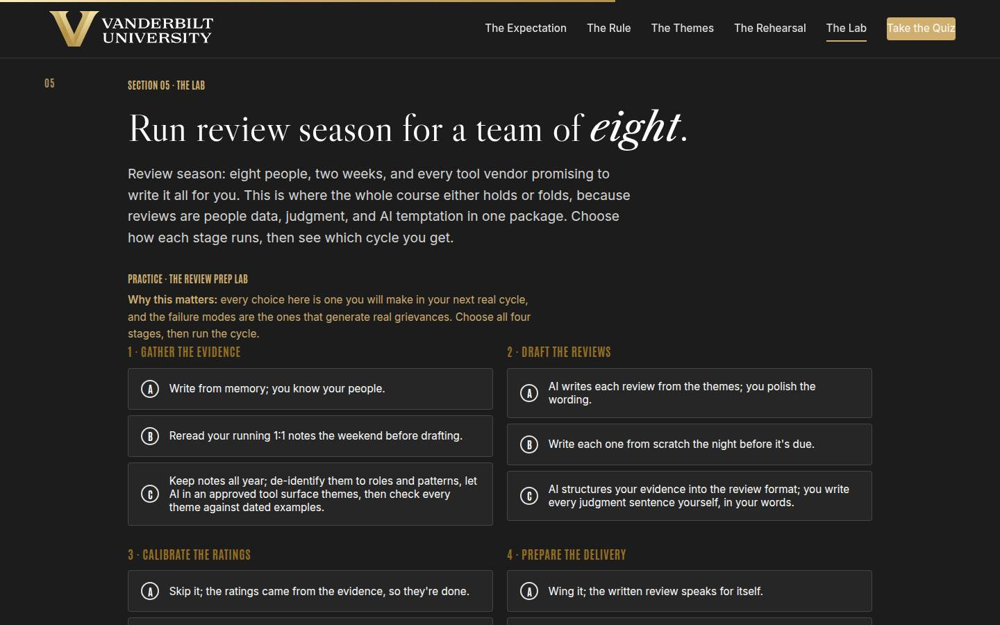
05 · The Review Prep Lab Full 14 min · Core 10
Give every learner a full felt rep of the method under pressure: four review-season stages, one choice each, and a two-weeks-later outcome that rewards evidence and owned judgment over both AI abstinence and AI outsourcing. The session's deepest practice block.
Say
“Review season: eight people, two weeks, and the strongest temptation in this whole course, because the tools will genuinely offer to write the reviews for you. You're going to run the season stage by stage: how you gather the evidence, how you draft, whether you calibrate, and how you prepare the delivery. Then the lab runs the cycle forward two weeks and shows you what your choices bought. One warning from everything we've built today: the lab never punishes you for using AI. Watch what it actually punishes.”
Do
- Set the scenario in one breath: eight people, two weeks, every vendor promising to write it for you. Choose how each stage runs.
- Send them into the lab on devices: four stages, then run the cycle.
- Let people get their outcome individually; the mid and weak tiers teach more than the strong one, so don't coach choices in advance.
- Ask for a show of hands by tier: who got the fair cycle, who got the grievance. Have one weak-tier learner read the grievance outcome aloud; the room learns from the postmortem.
- Push the rerun: strengthen your weakest stage and run it again. The delta between runs is the lesson.
- Then the pair drill: score your REAL last review cycle against the four stages and name the one change.
Ask
“For those who hit the mid or weak tier: which single choice cost you the cycle, and is it the choice your real review prep makes today?”
Expect:
- The AI-writes-it option: it felt efficient right up to the grievance
- Skipping calibration: nobody had ever named it as a stage
- An honest 'my real prep is the weak version of at least two stages'
Respond: Treat that last answer as the room's win: 'That recognition is the whole lab. The weak cycle isn't a hypothetical; it's what review season looks like under deadline pressure without a design. You now have the four stages and the strong option for each.'
Debrief: The lab's scoring is the course's thesis under pressure: evidence kept all year, aggregation before any tool, AI on structure, your name on every judgment, rehearsal where it pays. That's what fair costs, and it's cheaper than a grievance.
Validate: Every learner completes at least one lab run; most reach the strong tier on a rerun; every learner can name their real cycle's weakest stage and the change that upgrades it.
Watch for: Learners who game the lab by picking C everywhere without reading the coaching. The question that re-engages them: 'which of these C options would actually cost you the most to do for real, and why?' Also watch clock discipline; this section has the least slack.
Transition: “One piece left, and it's the one the data was always for: giving it back to the team.”
Core path: Core: one lab run instead of run-plus-rerun (rerun only for learners who hit weak tier), tier hands stay, the pair drill becomes a solo score of your own last cycle. This is the floor; never cut the lab entirely.
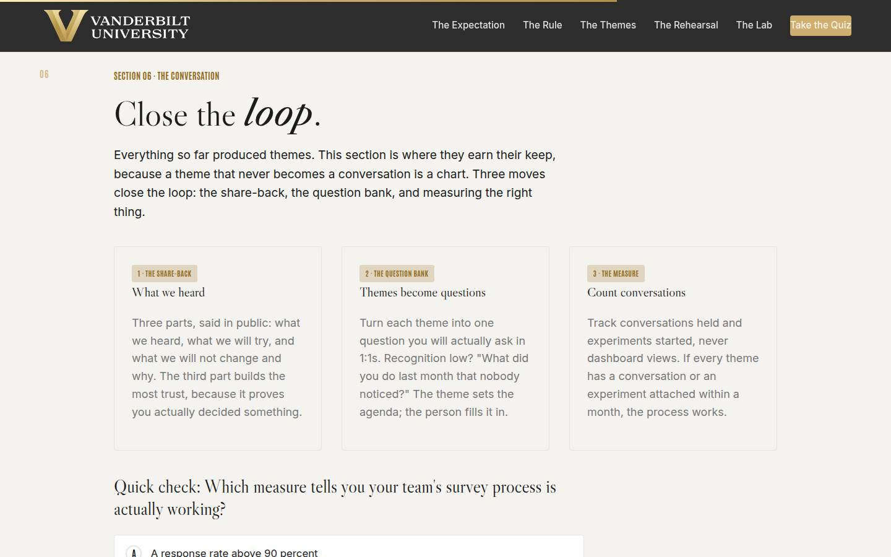
06 · From data to conversation Full 10 min · Core 6
Install the loop-closing moves: the three-part share-back (heard, try, won't change and why), the 1:1 question bank, and measuring conversations held instead of dashboards viewed.
Say
“Everything today has produced themes, and a theme that never becomes a conversation is a chart. Three moves close the loop. The share-back, three parts, said to the whole team: what we heard, what we will try, and what we will not change and why. That third part feels dangerous and builds the most trust, because it proves you actually decided something instead of performing agreement. The question bank: every theme becomes one question you actually ask in 1:1s. Recognition scored low? 'What did you do last month that nobody noticed?' And the measure: count conversations held and experiments started. Never dashboard views. One rule guards all of it: never speculate about who said what in a survey, even warmly, even once. The moment your team suspects comments get traced, every future survey collects fiction.”
Do
- Land the point first: a theme that never becomes a conversation is a chart, and teams can tell the difference.
- Walk the three cards: the share-back, the question bank, the measure.
- Spend an extra beat on 'what we will not change and why'; it's counterintuitive and it builds the most trust.
- Say the anonymity rule plainly: never speculate about who said what, even warmly. One hunted respondent poisons every future survey.
- Run the quick check, then Judge the Share-back: five lines on devices.
- Run the drafting drill: everyone drafts their own share-back opening for their section 03 signal, pairs judge, one or two go to the room.
Ask
“What's the one thing on your team you already know you would have to put in the 'will not change' line, and could you say the why out loud?”
Expect:
- Workload or pace during a known crunch
- A structural thing above the manager's authority
- An honest 'I've never said the why out loud'
Respond: Push to the sentence: 'Say the why as one sentence your team would recognize as true. If you can't finish it, that's your homework before the share-back, because an unexplained no reads as a filed survey, and an explained no reads as leadership.'
Debrief: Heard, try, won't change and why. Questions in the 1:1s, conversations on the scoreboard. The loop is closed when the team can see it closing.
Validate: 4+ of 5 on the trainer; drafted share-backs contain all three parts; the room can say the measure (conversations and experiments, never views) unprompted.
Watch for: The manager who says 'my team would see a share-back as corporate theater.' Don't argue; point at the third line: theater promises everything, the share-back refuses something out loud, and that refusal is what makes the rest believable. Also keep the drill lines short; share-backs bloat fast.
Transition: “That's the full method. Quiz first, then the card that puts a date on it.”
Core path: Core: cards and anonymity rule at full strength, trainer on devices, quick check stays; the draft-aloud shrinks to one volunteer's line judged by the room.
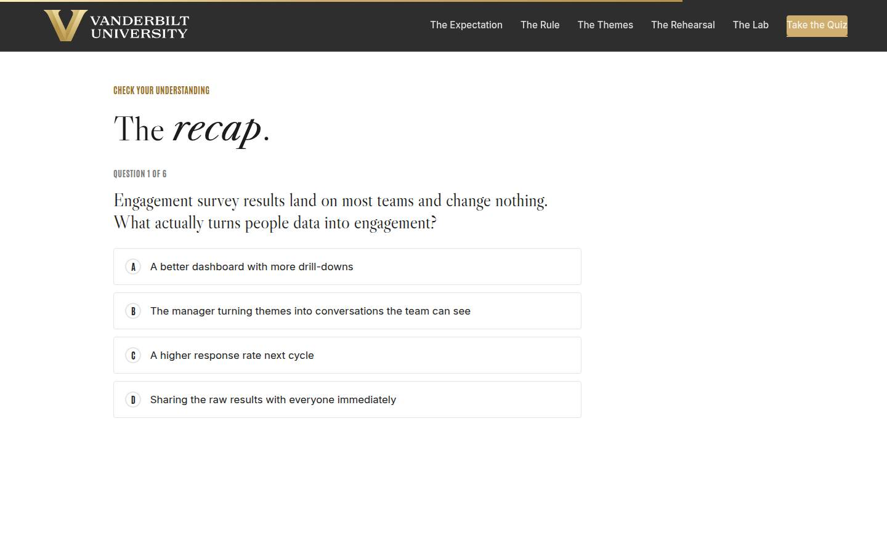
Recap quiz Full 4 min · Core 4
Score the session's knowledge against the five objectives before the capstone applies it (Kirkpatrick Level 2).
Say
“Six questions, one per big idea. This is the systems check before you write the card that leaves the room with you.”
Do
- Everyone takes it on their own device, all six questions.
- Ask for hands on 5-or-better; celebrate briefly.
- For any question the room visibly missed, do a 30-second reteach from the relevant slide, not a lecture.
Validate: Room mode at 5/6 or better. The quiz maps onto the objectives, so misses tell you exactly what to reteach.
Watch for: Racing. Frame it as the systems check before the card, not a race.
Transition: “Now the only part of today that changes anything.”
Core path: Core: keep at full length; this is the objectives' evidence.
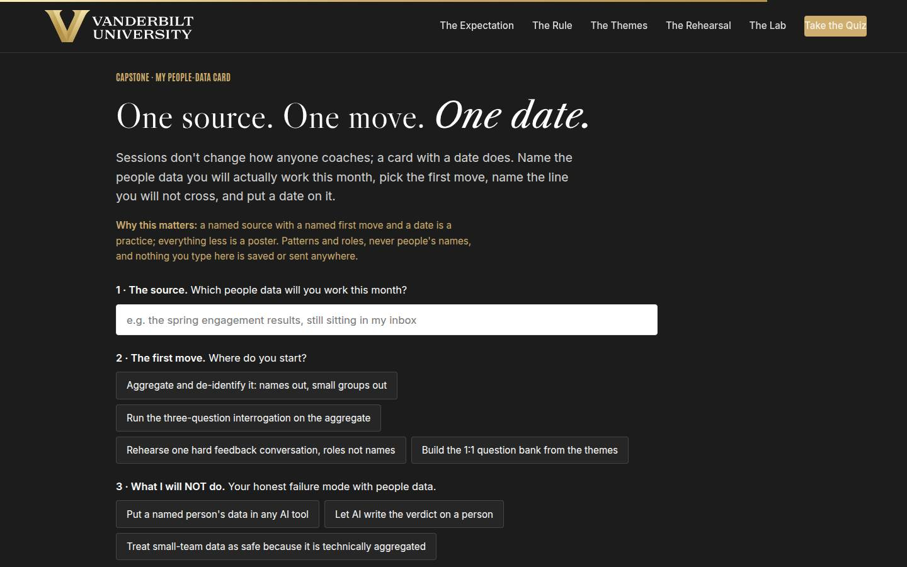
Capstone · My people-data card Full 6 min · Core 6
Convert the session into one dated commitment: one people-data source, one first move, one line never crossed, one start date. The transfer artifact and the Level 3 seed.
Say
“Sessions don't change how anyone coaches. A card with a date does. Pick the source, the real one: the survey results in your inbox, the retro board, your own notes. Choose the first move: aggregate and de-identify, run the interrogation, rehearse the feedback, or build the question bank. Then the honest field: what you will NOT do, because you know your failure mode; a named person in a tool, a verdict from a machine, or a small team treated as safe because the label said aggregated. And the date. A named source with a named move and a date is a practice. Everything less is a poster.”
Do
- Frame it: sessions don't change how anyone coaches; a card with a date does.
- Repeat the privacy norm before anyone types: patterns and roles, nothing saved or sent.
- Give quiet time; this is individual work. Circulate for stuck learners: the signal from the section 03 builder is the raw material, and 'aggregate and de-identify first' is a legitimate first move.
- Point at field 3, what you will NOT do, as the honest one: every manager in the room has one of these three failure modes.
- Push the build moment, then the finish line: the output is a conversation on the calendar, and two weeks out, one line on which conversations happened.
Ask
“What's most likely to make you skip the theme-to-conversation session, and what's your plan for that obstacle?”
Expect:
- No time; the week will eat it
- Nervousness about the share-back landing badly
- Doubt the data is good enough to bother
Respond: No time: 'It's 45 minutes against data your team spent hours giving you; the math forgives you exactly once.' Nervousness: 'That's what the rehearsal pattern is for, and a share-back with a won't-change line is the safest version.' Data quality: 'A thin signal plus the ground truth test still yields one honest question for a 1:1, and one honest question is a working loop.'
Debrief: One source on your team is about to get worked properly: aggregated, interrogated, humanized, and turned into a conversation with a date. That's the whole loop, once, for real.
Validate: Every learner builds a card (all four fields). The card plus the 7-day pulse plus the 30-day re-poll is the evidence chain.
Watch for: Grand cards ('fix engagement across the department'). Push to ONE source that actually exists in their inbox. And date-dodging: 'soon' is not a commitment; help them pick the actual day on the spot.
Transition: “Reference shelf in one breath, and then the send-off.”
Core path: Core: protect at full length; never cut the capstone.
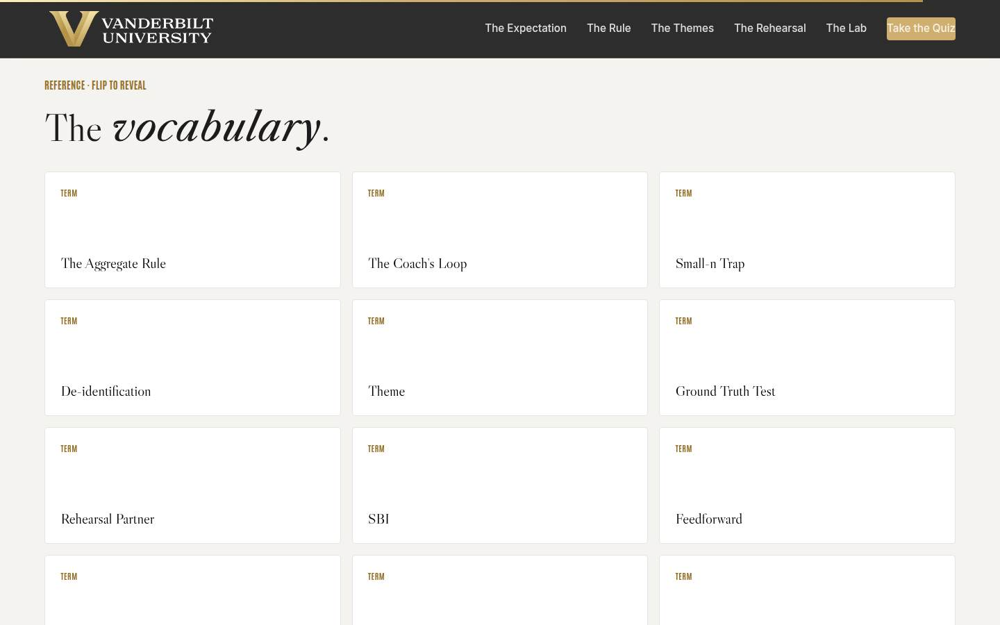
Glossary Full 1 min · Core skip
Signpost the reference layer; it lives here for after the session.
Say
“Every term from today lives here as flip cards, including the small-n trap, for the next time a dashboard offers you a team-level number about three people.”
Do
- Flip one card on the projector (Small-n Trap is a good pick; the trench coat line gets a laugh and reteaches section 02).
- Tell them it's all here whenever they need the vocabulary back.
Validate: None; reference material.
Watch for: Don't tour all twelve cards; one flip makes the point.
Transition: “Last slide. One conversation left to schedule.”
Core path: Core: skip; point at it verbally from the closing slide.
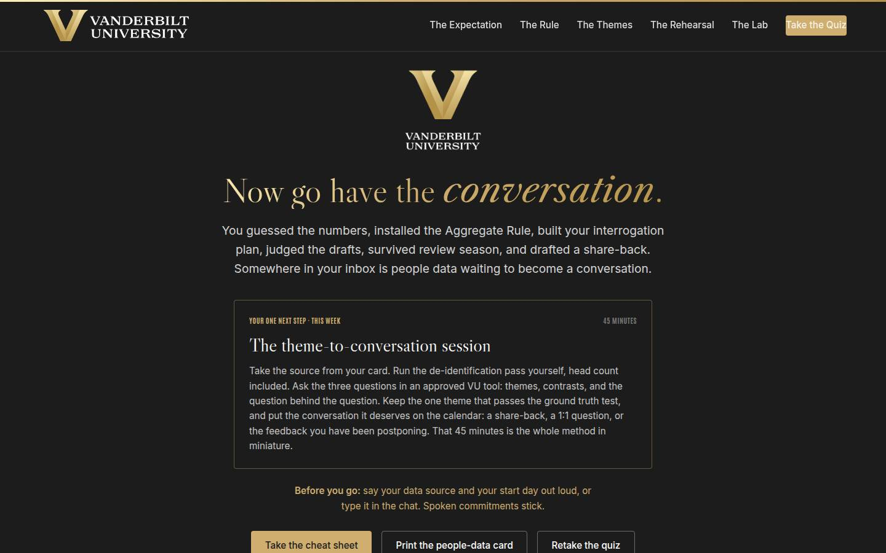
Closing · commitment Full 5 min · Core 1
Convert cards into spoken commitments, capture the Level 1 reaction check, and point at the follow-up chain.
Say
“The whole session in one breath: the manager moves engagement, the Aggregate Rule decides what AI may see, the three questions find the themes, the ground truth test keeps you honest, the rehearsal makes the hard conversation deliverable, and the loop closes when your team can see it closing. You have a card. Before you go: your source, and your start day. Say it out loud; spoken commitments stick.”
Do
- Read the featured card: the one next step is the 45-minute theme-to-conversation session, this week, ending with a conversation on the calendar.
- Run the fist-to-five (Level 1): 'On a fist to five, how confident are you that you can work your data source inside the lines and land the conversation?' Scan and note the number; the 30-day re-poll asks it again.
- Run the commitment round, popcorn style: source and start day, out loud or in chat.
- Point at the cheat sheet and people-data card buttons; the cheat sheet is built to sit next to the keyboard during the session.
- Tell them the 7-day pulse is coming, then land the last line and stop on time.
Ask
“Around the room, one line each: your data source, and your start day.”
Expect:
- 'The spring survey results, Thursday'
- 'My 1:1 notes, de-identified this weekend'
- Someone commits to the postponed feedback conversation first
Respond: Thank each one, no commentary. For the postponed-feedback answer, warmly: 'Good instinct. Rehearse it once with roles, not names, and it stops being postponable.'
Debrief: The session's success metric isn't in this room; it's the 7-day pulse: how many theme-to-conversation sessions actually ran, and which conversations landed on calendars because the data finally got worked.
Validate: Fist-to-five mostly 3+ (Level 1); a majority state a source and a day out loud or in chat. Count both; with the pulse and the 30-day re-poll, that's your evidence chain.
Watch for: Cards that quietly skipped the date. The commitment round catches them: no day, no commitment; help them pick one on the spot.
Transition: “Go put the 45 minutes on your calendar. And when a theme surprises you, and one will, take it to the team as a question. That question is the sound of the loop closing.”
Core path: Core: fist-to-five plus a fast commitment round; the ending survives every cut.
Generated from facilitator/notes.json. The on-screen facilitator edition lives at ./ alongside this guide.